As the lead designer at a San Francisco technology startup, I play with the interaction of newly-developed software.
My responsibilities include leading the design process, managing projects, information documentation and sharing, business development aside the company’s CEO and CTO, and much more... I wear a lot of hats!
We have 2 main parts to the company, the movie discovery website that serves as a demo of our technology and the B2B subscription service that licenses out the technology.

Jaman.com is a movie discovery website with data from over 30,000 movies. We provide a person-directed interaction that allows you to find movies based on your mood. We go beyond the black and white of movie classifications, like 'comedy', and provide you with the ability to quantify, like 'sort of funny'.
This awesome product needed some attention paid to the user experience, so I went on a journey to work out the bugs.
USER RESEARCH AND PROBLEM FINDING
To pinpoint the site’s issues we used methods including personal interviews with the team and users, UserVoice and UserTesting online feedback, and comparing search experiences to other websites in our space.
 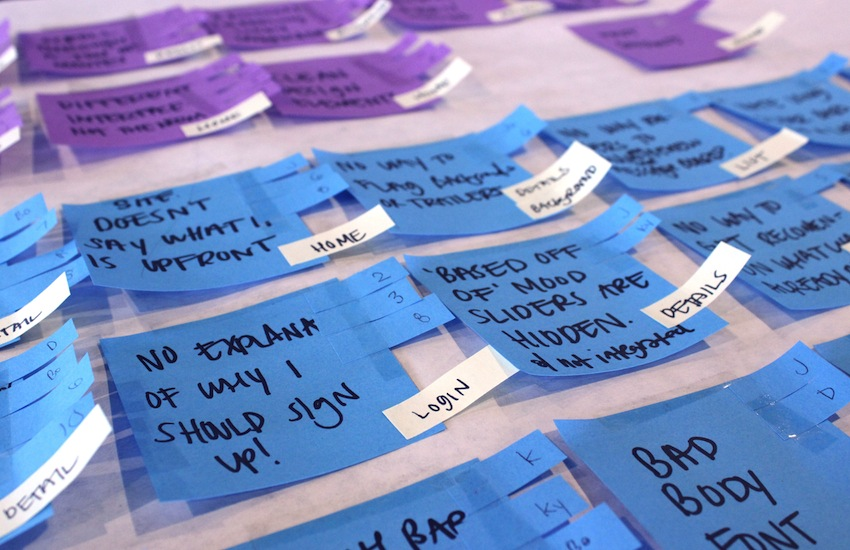
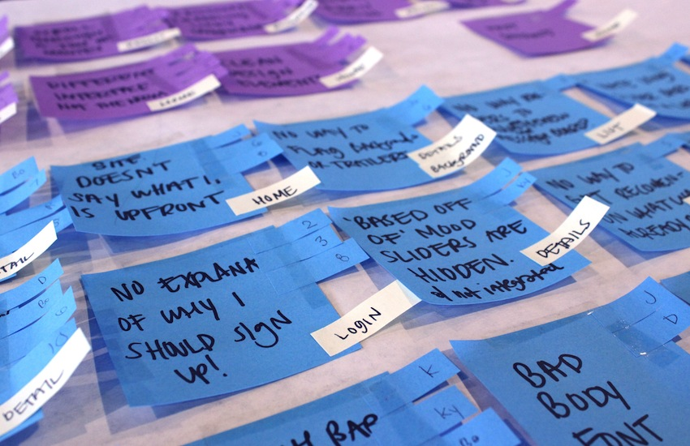
We identified the problems and kept track of how many times they showed up in the research which would allow us to target the most pressing problems first. I also kept track of who said what, so that team members had more insight into the reviewers that were having particular problems.
We then mapped out the problems onto screenshots of the site.
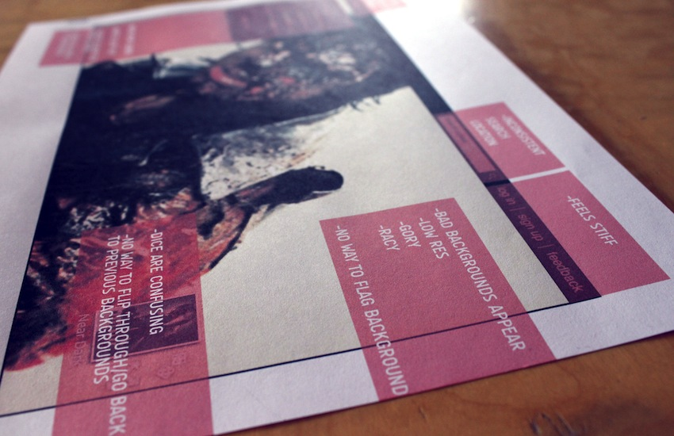
PROBLEM SOLVING
With the problems highlighted, I started working through them with the team. Wireframes were used in assessing the navigation of the site and the functionality we would have to add for the best movie discovery experience. We’v gone through a ton of mockups!
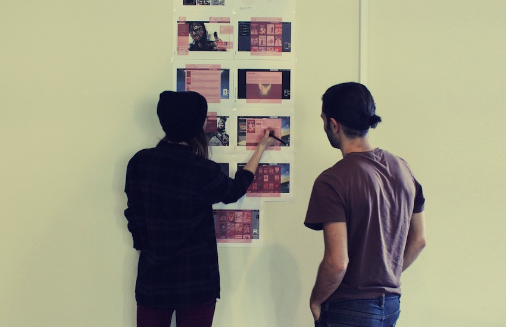

THE REDESIGN
The whole team is super inspired by the technology and we can’t help but wonder what it is capable of. As a result, we are exploring a complete redesign of the movie website to push the interaction of our technology further while providing improved service.
CONCEPT IDEATION
Our office is covered in ideas! This first set of concepts was meant to open our minds to all of the possibilities for interactions, metaphors, and themes we could think of. It also helped to loosen up the team members to wild ideas moving forward.
WIREFRAMES
I looked for patterns within our concepts and began wireframing the functions. First hand drawn and then digital.
SITE REDESIGN DIRECTIONS
The directions that appeared to us took either a traditional approach or a futuristic approach to the navigation. We are interested in the futuristic directions and started to think about what it means to be ‘of the future’.
THE POSSIBILITIES OF TOUCH SCREEN
We recognized a huge opportunity in exploring the interaction of our product with touch screen support. So before the second set of wireframes, I did some research into touch screen gestures. I also researched a sample of 40 mobile apps to get more familiar with how gestures are currently assigned to tasks in some of our favorite applicatiions.
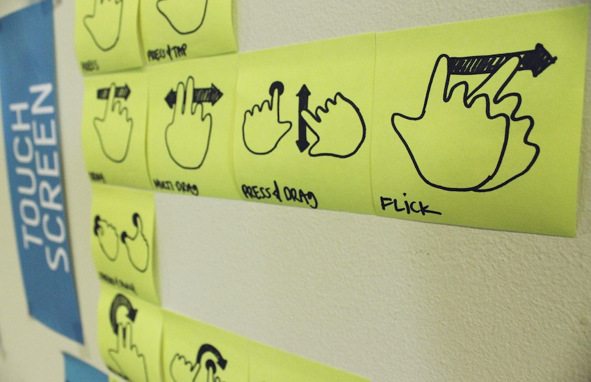
PHYSICAL PROTOTYPES
As we moved toward design solutions with more dimensionality, I was able to apply my passion for tangible objects to the software world. I designed a few challenges for our team ‘Cut Lay Snap’ and ‘+ Words’ to engage us in open-ended design and discussion.
INSPIRATION
Our wall of interesting and beautiful functionality collected from team members.
VISUAL DESIGN PLAY
Though there’s a lot of decision making before the product has a logo, I wanted to visualize a few of our ideas with names and icons. It helps us to imagine the final product and inspire our next stage of wireframes.
IN THE WORKS!
We are still redesigning the Jaman.com movie discovery application and website. Check back for updates to this project! Also check out the next section on design and development of the technology-enabled service.
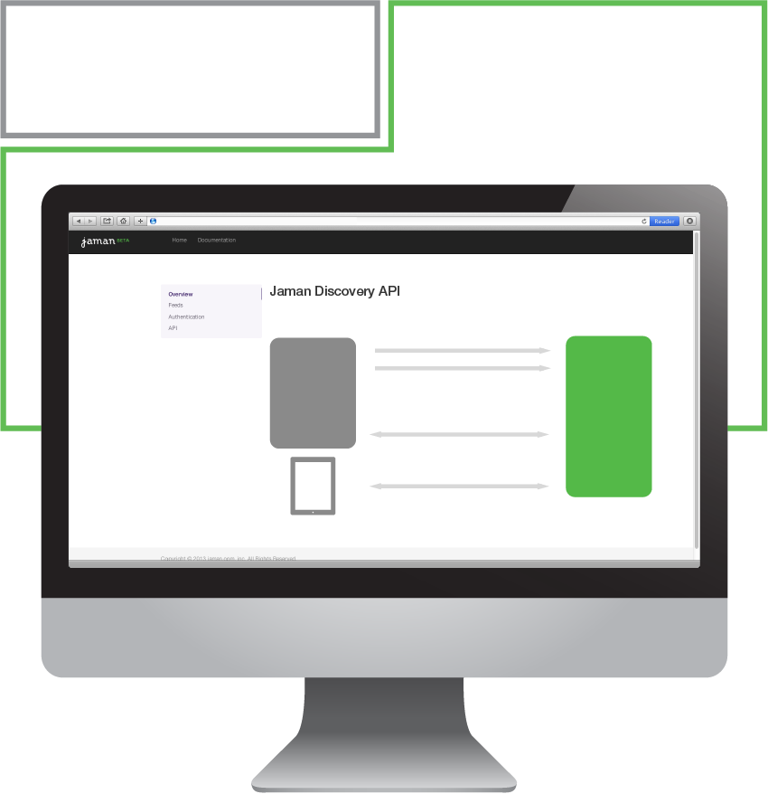
Having secured intellectual property rights on the technology, the company is getting ready to license it on a subscription basis. My responsibilities have doubled and I’m now helping to develop the B2B strategy and define the visual identity for the technology.
How do you visualize an intangible technology?
What are the company goals and visions for the product?
What is our strategy for moving forward?
How might we play with the standard B2B model?
How might we carve out our own space?
COMPETITIVE LANDSCAPE
To answer some of these questions, we looked at the market. As a B2B service, we realized that our layer of users is also our competition and our possible partners. We looked at a wide scope of products and businesses that our technology could effect which gave us a better idea of where we fit into the space. We have few competitors and a large opportunity to define a new category of big data, one where the end user can drive their experience working with product data in awesome new ways!
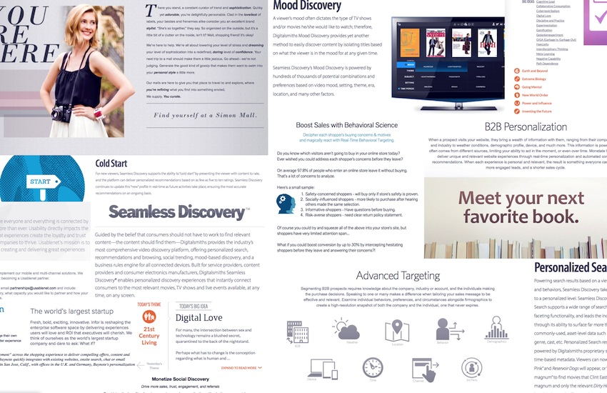
I looked closely at the verbal and visual communication being used and captured a snapshot of the most intriguing ideas.
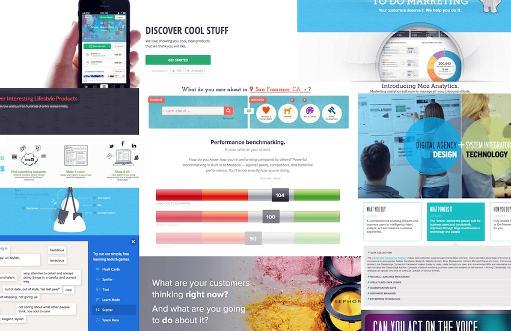CONCEPT IDEATION
The first round of sketches to explore the possibilities!
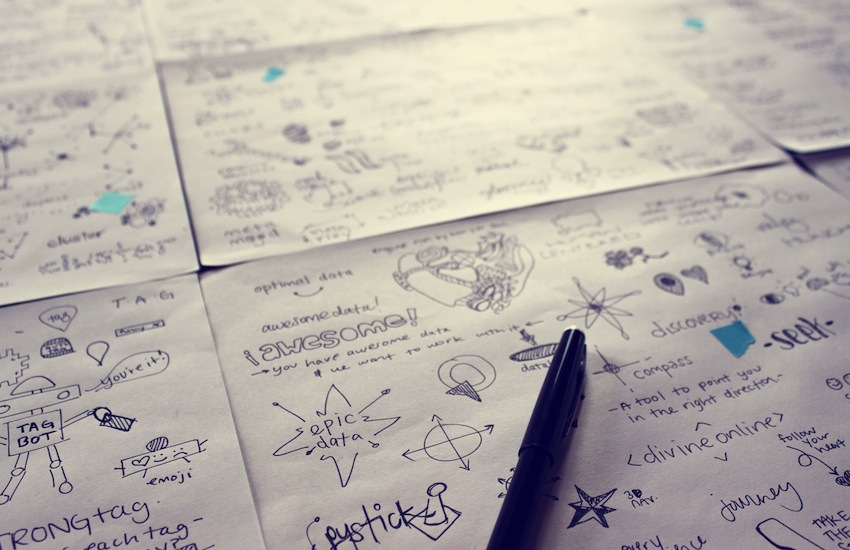
CONCEPT DEVELOPMENT
At this point, we have seen a bunch of patterns emerge. One is the trifecta of Big Data, Measurement, and Human Behavior/Discovery. Another is the two sides to the puzzle: Analytics and Interaction. In the latter equation, we have steered towards Analytics to focus more on the value that we bring to B2B clients and less on the end user. That said, I am always looking for our emotional factor that ties it all together.
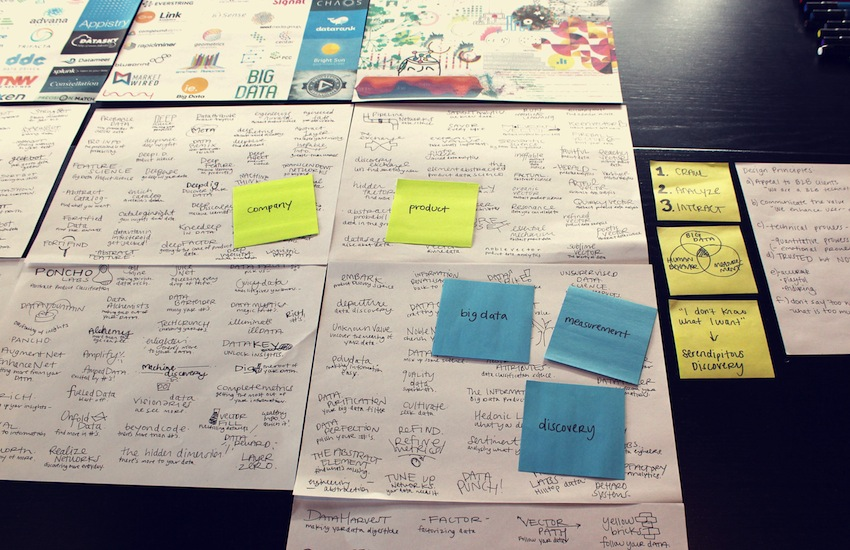REFINEMENT!
We are currently refining ideas and playing with them digitally. Thanks for watching!


 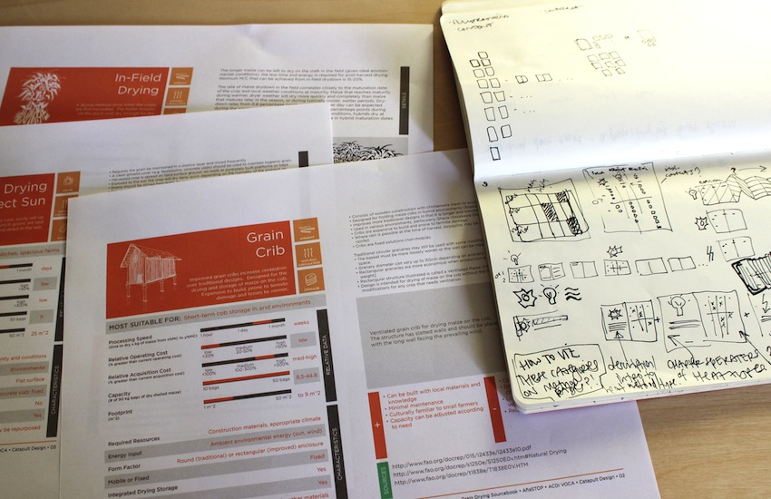
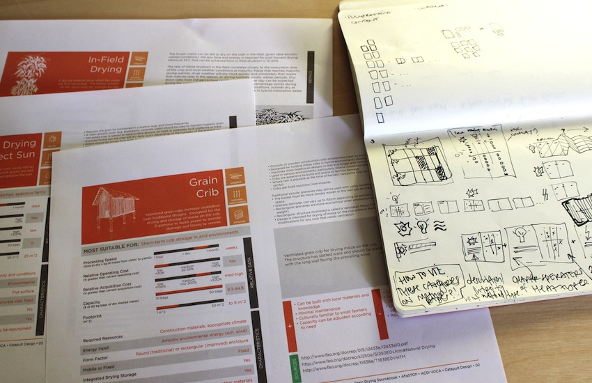

 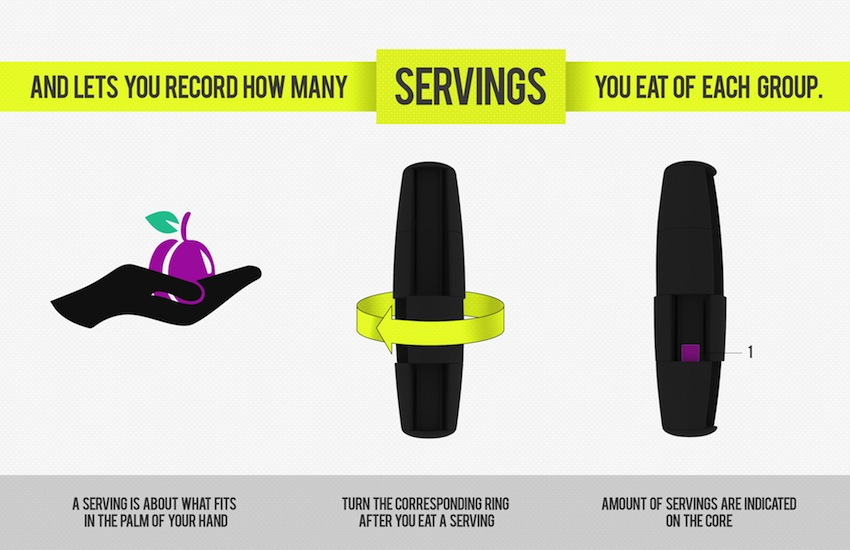
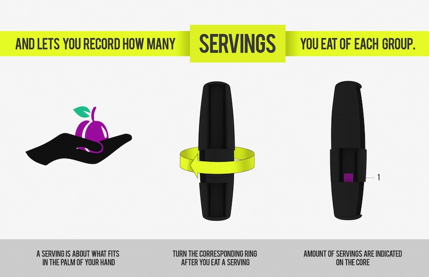


 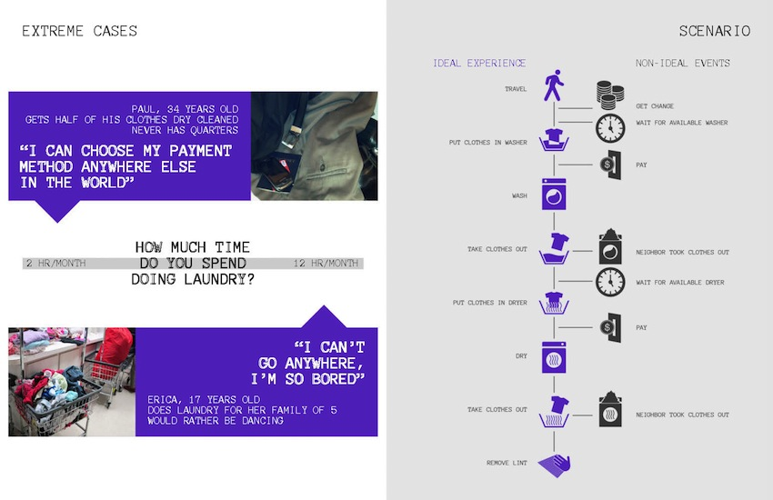
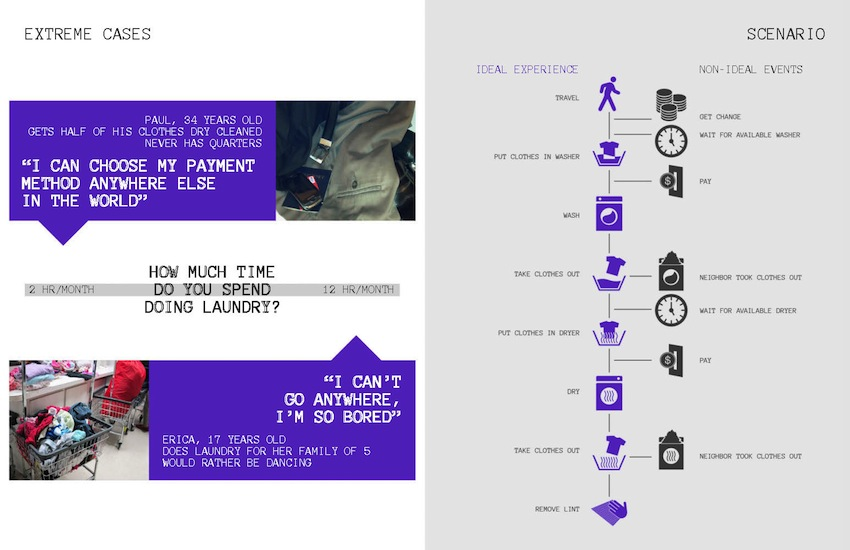


 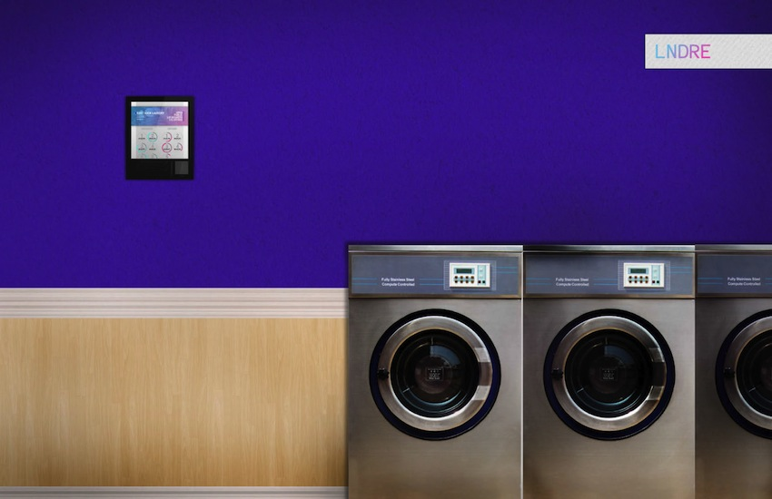
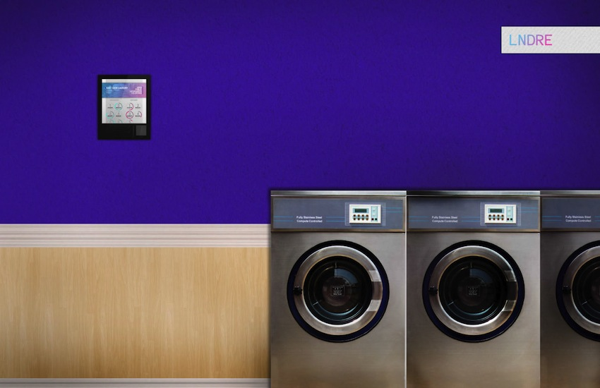


 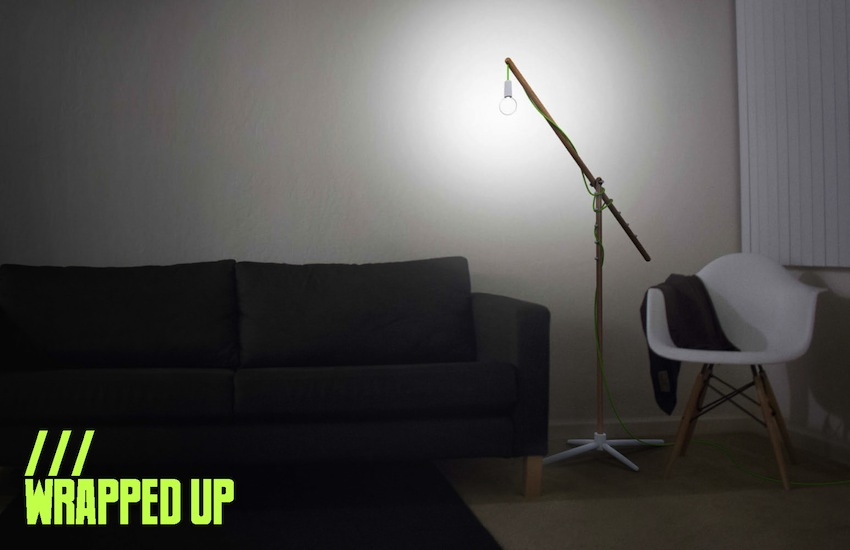
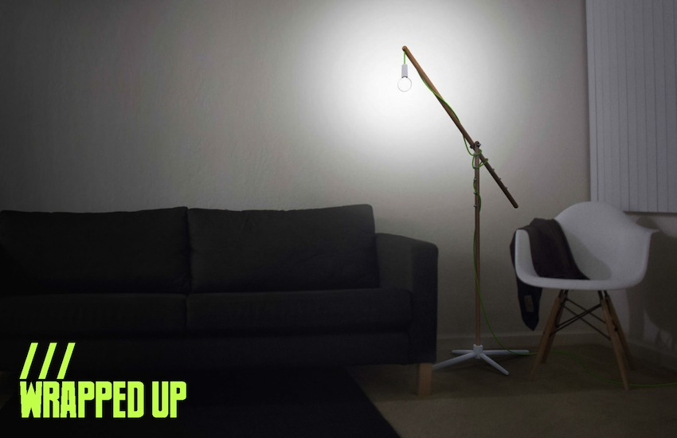